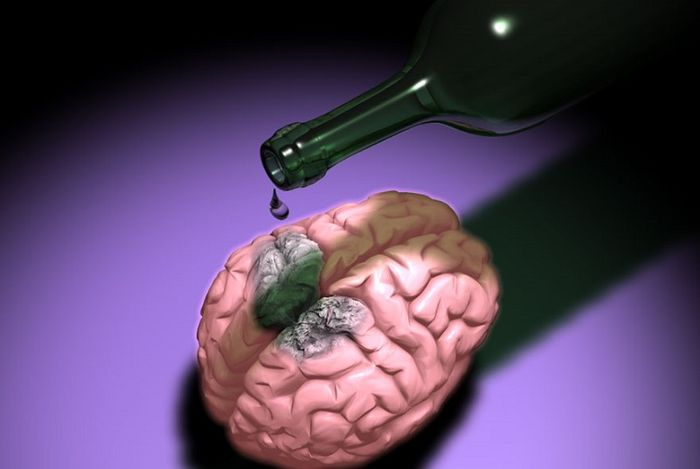
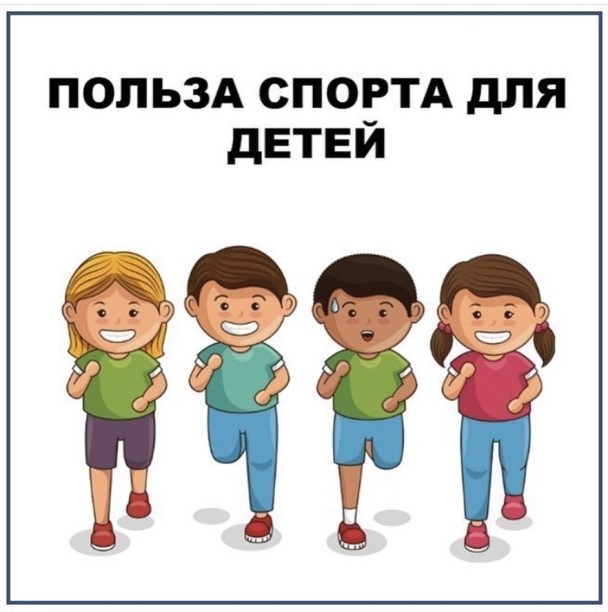
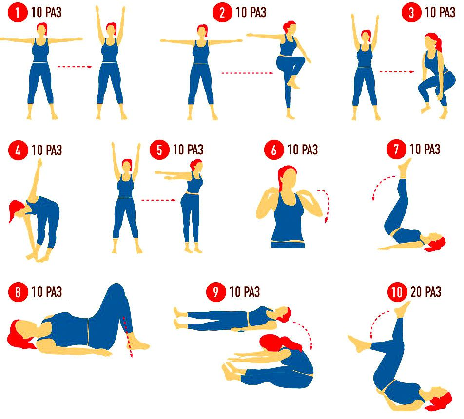
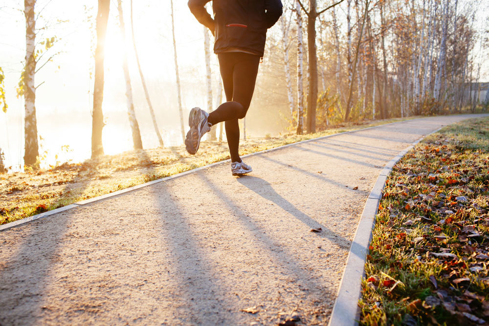

Голуб Саша
Алкоголь поражает поджелудочную железу, влияет на печень, желудок, пищевод. Сильнее всего от алкоголя страдает человеческий мозг. Алкоголь склеивает эритроциты в крови, что приводит к образованию тромбов. Доказано, что сто грамм водки убивает 8 000 мозговых клеток.
 Переход для более детального изучения материалаВред курения в том, что оно вызывает три основных заболевания: рак легких, хронический бронхит, коронарная болезнь. Уже давно доказано, что табак является причиной смертности от рака легкого в 90 % всех случаев, от бронхита и эмфиземы в 75 % и от болезни сердца в примерно 25 % всех случаев.
Переход для более детального изучения материалаОрганизованная по определённым правилам деятельность людей (спортсменов), состоящая в сопоставлении их физических и/или интеллектуальных способностей. Спорт представляет собой специфический род физической или интеллектуальной активности, совершаемой с целью соревнования, а также целенаправленной подготовки к ним путём разминки, тренировки. В сочетании с отдыхом, стремлением к постепенному улучшению физического здоровья, повышению уровня интеллекта, получению морального удовлетворения, к совершенству, улучшению личных, групповых и абсолютных рекордов, славе, улучшению собственных физических возможностей и навыков спорт предназначен для совершенствования физико-психических характеристик человека. Цель спорта высших достижений — это достижение максимально возможных спортивных результатов или побед на крупнейших спортивных соревнованиях.
 Переход для более детального изучения материалаЗарядка помогает сбросить вес: Как мы уже сказали, занятия спортом рано с утра активируют обмен веществ, за счет чего сжигание калорий и жира происходит быстрее и эффективнее, чем в любое другое время суток. Это помогает поддерживать вес в норме без излишних усилий и хорошо себя чувствовать в течение дня. Пробуждает тело и мозг: Те, кто начинает утро с активной тренировки, имеют все шансы провести день в том же духе. После зарядки активный день, полный движения и свежих идей, вам просто обеспечен. Спорт заряжает энергией и помогает разнообразить день, что немаловажно в нашу эпоху рутины и стресса. Улучшает сон: Спорт и хороший сон всегда идут рука об руку. Запуская активный обмен веществ с самого утра, вы создаете правильный баланс гормонов в теле, который необходим для здорового сна. Уделяйте сну должное внимание – чтобы вам приснился мир, к которому вы будете стремиться в реальности.
 Переход для более детального изучения материалаБег - один из способов передвижения (локомоции) человека и животных; отличается наличием так называемой «фазы полёта» и осуществляется в результате сложной координированной деятельности скелетных мышц и конечностей. Для бега характерен, в целом, тот же цикл движений, что и при ходьбе, те же действующие силы и функциональные группы мышц. Отличием бега от ходьбы является отсутствие при беге фазы двойной опоры. Бег предоставляет хорошие условия в качестве аэробной тренировки, которая увеличивает порог выносливости, положительно влияет на сердечно-сосудистую систему, повышает обмен веществ в организме и, таким образом, помогает осуществлять контроль за весом тела. Бег позитивно влияет на иммунную систему и улучшает тонус кожи. Укрепление мускулатуры ног и улучшение обмена веществ помогает предотвратить и устранить целлюлит. Бег позволяет наладить ритмическую работу эндокринной и нервной систем. Во время бега, когда человек постоянно преодолевает земную гравитацию, подскакивая и опускаясь в вертикальном положении, кровоток в сосудах входит в резонанс с бегом, при этом активизируются ранее незадействованные капилляры. Микроциркуляция крови активизирует деятельность органов внутренней секреции. Поток гормонов возрастает и способствует координированию деятельности других органов и систем организма.
 Переход для более детального изучения материала